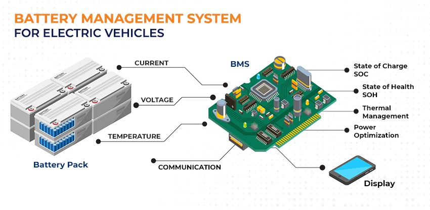

With the fast advancement of electric vehicle technology, the market is expanding rapidly. Consequently, the battery management system (BMS) is becoming increasingly crucial. It ensures the performance and safety of electric cars.
The battery pack is the heart of an electric vehicle. Therefore, its health directly impacts the vehicle's performance and longevity. In this context, the measuring function of the BMS has become critical. It is essential for monitoring and maintaining the battery state.
The Importance of Voltage Monitoring
Voltage monitoring is one of the core tasks of BMS. It impacts the battery's long-term health and performance. It also affects its current state. Mature digital BMS monitors the voltage of individual batteries using high-precision technology. This helps determine the battery's overall health. In addition to traditional direct measuring methods, modern BMS optimizes the voltage monitoring process with algorithms and models. This boosts data quality and dependability.
The Importance of Reading Rate and Application Differences
The read rate is crucial for BMS. It directly affects real-time data and the system's response speed. A low reading rate is sufficient in applications with low dynamic changes, such as a backup power supply. For example, 1 minute or 10 seconds per point is adequate. However, a high reading rate is crucial in scenarios where the current changes frequently, such as in electric vehicles. A rate of 1 point per second is necessary.
In the field of research, researchers may require a reading rate of dozens of points per second. This high-speed reading provides more accurate data when battery performance changes rapidly. It helps optimize the performance and response of the entire vehicle.
The Impact of Data Accuracy
Data accuracy is another key indicator for measuring BMS performance. In basic application scenarios like full battery charging or full discharge detection, an accuracy of 100mV is sufficient.
However, in more advanced applications, higher accuracy is particularly important. Scenarios requiring even battery pack charging need an accuracy of 10-30mV. Accurate data not only helps improve the efficiency and lifespan of batteries but also reduces safety risks to a certain extent.

Method and Importance of Current Measurement
In BMS, the measurement of current is also crucial. The main measurement methods include current shunt and Hall effect sensors. Current shunt measures current through high-precision, low-resistance high-power resistors. Although the accuracy is high, attention should be paid to errors that may be caused by connection problems.
The Hall effect sensor provides a contactless measurement method, which is more applicable in some situations. Different measurement methods are suitable for different application environments and requirements. Choosing the appropriate current measurement technology is essential to ensure the overall performance of BMS and battery safety.
The Importance of Temperature Measurement
In addition to voltage and current, battery temperature monitoring is also a core function of BMS. Temperature measurement is essential to prevent battery overheating. It also helps optimize charging strategies and extend battery life. BMS usually monitors the temperature of individual battery cells and battery packs in real time through integrated temperature sensors.
These sensors can detect abnormal temperature changes. This can trigger the cooling system or adjust the battery's charging and discharging strategy to prevent overheating and improve efficiency. Temperature measurement is particularly important in extreme climate conditions. It ensures the reliability and safety of batteries at low or high temperatures.
The Importance of Voltage Measurement Isolation
To ensure measurement accuracy and battery safety, it's crucial to implement isolation measures in the voltage measurement process. Cells with different potentials must be effectively isolated in battery modules to prevent voltage interference and potential safety risks. This isolation safeguards the battery cells and ensures the reliability and stability of the entire BMS system.
Conclusion
The measurement function in the BMS of electric vehicles is essential for maintaining battery health and vehicle performance. As electric vehicle technology advances, BMS measurement technology is also improving. By accurately measuring battery voltage, current, and other key parameters, BMS ensures the safe and efficient operation of electric vehicles. In the future, with ongoing technological advancements, BMS is expected to achieve greater breakthroughs in accuracy and efficiency, further advancing electric vehicle technology.